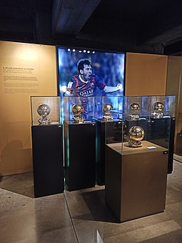

.png)
.png)
.png)

2019–20: Record sixth Ballon d'Or

On 5 August 2019, it was announced that Messi would miss Barcelona's US tour after sustaining a right calf injury.[263] On 19 August, Messi's chipped goal from the edge of the box against Real Betis was nominated for the 2019 FIFA Puskás Award.[264] Later that month, he suffered another setback following the return of his calf injury, which ruled him out of the opening game of the season;[265] as a result, he was sidelined indefinitely, and was only expected to return to action with Barcelona after the September international break.[266] On 2 September, Messi was shortlisted as one of the three finalists for both the 2019 FIFA Puskás Award and the 2019 Best FIFA Men's Player Award, with Messi winning the latter on 23 September.[267][268]
Messi's six Ballon d'Or awards on display in the FC Barcelona Museum. His record sixth from 2019 is at the front.
Messi made his first appearance of the season on 17 September, and on 6 October he scored his first goal of the season with a free kick in a 4–0 home win over Sevilla; this was his 420th goal in La Liga, which saw him break Cristiano Ronaldo's record of 419 goals scored in Europe's top five leagues.[269] On 23 October, Messi scored his first Champions League goal of the season in a 2–1 away win over Slavia Prague, becoming the first player to score in 15 consecutive Champions League seasons (excluding qualifying rounds).[270] He also equalled Raúl and Cristiano Ronaldo's shared record of the most sides scored against in the competition (33).[271] On 29 October, Messi scored in a 5–1 home win over Real Valladolid in La Liga; his first goal – a set piece from 35 yards – was the 50th free-kick of his career.[272] His goals (608) also saw him overtake Cristiano Ronaldo's senior goal tally (606) at club level.[273] On 9 November, Messi scored three goals (including two free kicks) in a 4–1 home win against Celta Vigo. This was his 34th hat-trick in La Liga, equalling Cristiano Ronaldo's Spanish top-flight record.[274] On 27 November, in what was his 700th appearance for Barcelona, Messi scored one goal and assisted two more in a 3–1 home win over Borussia Dortmund in the UEFA Champions League. Dortmund were the 34th team he had scored against in the competition, breaking the previous record of 33 held by Cristiano Ronaldo and Raúl.[275] On 2 December, Messi was awarded a record-breaking sixth Ballon d'Or.[276] On 8 December, Messi scored his record-breaking 35th hat-trick in La Liga with three goals in Barcelona's 5–2 home win over Mallorca.[277]
On 22 February 2020, Messi scored four goals in a 5–0 home win over Eibar in La Liga.[278] On 14 June, he scored in a 4–0 away win against Mallorca, becoming the first player ever in La Liga to score 20 goals or more in 12 consecutive seasons.[279] On 30 June, he scored a panenka in a 2–2 home draw against Atlético Madrid in La Liga, to reach his 700th goal in his senior career for Barcelona and Argentina.[280] On 11 July, Messi provided his 20th assist of the league season for Arturo Vidal in a 1–0 away win over Real Valladolid, equalling Xavi's record of 20 assists in a single La Liga season from 2008 to 2009;[281][282] with 22 goals, he also became only the second player ever, after Thierry Henry in the 2002–03 FA Premier League season with Arsenal (24 goals and 20 assists), to record at least 20 goals and 20 assists in a single league season in one of Europe's top-five leagues.[282][283] Following his brace in a 5–0 away win against Alavés in the final match of the season on 20 May, Messi finished the season as both the top scorer and top assist provider in La Liga, with 25 goals and 21 assists respectively, which saw him win his record seventh Pichichi trophy, overtaking Zarra; however, Barcelona missed out on the league title to Real Madrid.[284] On 9 August, in the Champions League round of 16 second leg versus Napoli at the Camp Nou, Messi scored the second goal and earned a penalty which led to a third goal and led his side to a 3–1 home victory and qualified 4–2 on aggregate for the quarter-finals against Bayern Munich.[285] On 15 August, Messi suffered his worst defeat as a player as Bayern Munich beat Barcelona 8–2 in a one-off tie in Lisbon, leading to another disappointing exit from the Champions League.[286]